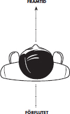
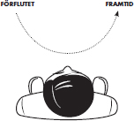

Även om hypnos är ett kraftfullt verktyg så ger trancen i sig ingen förändring om den inte kombineras med den coachande delen. Hypnosens främsta nytta är att vi i trance kan uppmärksamma och förändra våra omedvetna processer och att vi enkelt kan använda vår fantasi som påverkar vårt omedvetna.
Så länge jag kan minnas hade jag varit livrädd för spindlar. Det räckte med att jag såg en spindel på tv för att jag skulle få skenande hjärtklappning och svårt att andas. Folk i min bekantskapskrets tyckte mest att det var lustigt och förstod inte allvaret i min rädsla. Trots att jag medvetet och logiskt förstår att svenska spindlar är ofarliga har min kropp alltid reagerat instinktivt. Ända tills jag kom i kontakt med hypnos. Under hypnossessionen fick jag i djup trance minnas tillfällen då jag blivit rädd för spindlar, men i stället för att vara i händelsen fick jag se det hela som på film. Dessutom fick jag göra mina minnen komiska som gamla stumfilmer. Jag kunde se mig själv bli rädd och samtidigt skratta åt hur komiskt det såg ut. På något sätt blev mina minnen omkodade av detta och min fobi är nu helt borta. Spindlar är fortfarande inget favoritdjur, men jag är inte det minsta rädd för dem.
Vi föds bara med två rädslor: rädslan för att falla och rädslan för höga ljud. Alla andra rädslor är inlärda och det positiva med detta är att om vi en gång kunnat lära in något betyder det att vi även kan lära om.
Det här kapitlet innehåller massor med användbara tekniker för hemmabruk. Teknikerna är alla, mer eller mindre, variationer på ett och samma tema: att ändra på hur vi tänker i stället för vad vi tänker, något som exemplet ovan illustrerar. Men vi ska börja med att titta närmare på ankring – en metod som bland annat hjälper oss att koppla positiva känslor till ett viss beteende.
ANKRING
I sitt berömda experiment ringde Pavlov i en klocka varje gång han gav sina hundar mat. Efter en period kunde han konstatera att hundarna sammankopplade ljudet av klockan med mat och att de började dregla så fort han ringde i klockan. Vårt nervsystem fungerar på samma sätt. Vi kopplar ihop olika stimuli med känslor, minnen och beteenden. Säkert har du varit med om att en speciell doft eller ett speciellt musikstycke fått dig i en särskild stämning eller återkallat vissa minnen. Pavlov kallade detta fenomen betingning. Inom hypnos- och NLP-världen kallar vi det ankring. Ett ankare är alltså ett yttre stimuli, till exempel en specifik doft, ett ljud, en maträtt eller ett ord, som följs av en inre respons.
Termen ankring refererar till själva processen där ankaret sammankopplas med ett specifikt tillstånd eller ett beteende, något som kallas för att ”sätta ett ankare”. När sedan ankaret används för att utlösa tillståndet kallar vi det för att ”fyra av” ankaret.
POSITIVA OCH NEGATIVA ANKARE
Ett ankare kan fungera både positivt och negativt och ofta reflekterar vi inte ens över våra ankare. Om du till exempel tänker på ett positivt minne kommer förmodligen positiva känslor automatiskt att följa – känslor som alltså är förankrade i detta minne. Men de stimuli som vi kopplar ihop med en specifik känsla behöver inte logiskt ha med den att göra. Vad som helst kan vara ett ankare för vilken känsla som helst – en fobi är till exempel ett ankare där det man har fobi för direkt kopplas till rädsla. En tidigare klient var extremt rädd för flygplan – alltså inte för att flyga utan för flygplan som flög förbi. Han visste själv hur detta hade börjat. Han hade legat på sjukhus och precis vaknat upp ur narkos efter en operation. Han var rädd och förvirrad och hade en enorm smärta. I samma ögonblick hör han ett flygplan passera utanför fönstret. Hjärnan gör direkt en koppling mellan flygplanet och de obehagliga känslorna. Även om han rent logiskt vet att ljudet av flygplanet inte har något samband med obehagskänslan biter inte den logiken på det omedvetna. Vad vi däremot kan göra är att ”störa ut” det negativa ankaret. Detta kan man göra genom att koppla ett starkare positivt ankare till ljudet av flygplan. Jag fick honom att gapskratta och sätta ett ankare för den känslan. Genom att sedan tänka på ljudet av flygplan och samtidigt fyra av skrattankaret försvann rädslan.
Hur gör man då för att skapa ett eget ankare? Eftersom du i trancen har lättare att använda din fantasi underlättar du sammankopplingen mellan ett önskat tillstånd och en yttre stimuli. När du väljer ditt stimuli är det viktigt att du själv kan utlösa det – du kan till exempel välja att klämma dig i örsnibben, att trycka på en punkt på knäet eller helt enkelt välja ett ord som ankare. En annan sak som man bör tänka på är tajmingen. Ankringen bör ske precis innan tillståndet nått klimax, alltså när tillståndet fortfarande tilltar i styrka.
Har du tajmingen rätt när du sätter ditt ankare räcker det att du gör det en enda gång. Om du sedan fortsätter använda ditt ankare kommer det att fortsätta vara verksamt.
Att skapa ett ankare
Bestäm ett mentalt tillstånd eller en känsla som du kan ha nytta av i framtiden. Jag har själv gjort detta med mitt perfekta mentala tillstånd för att föreläsa, men det kan vara vad som helst. Utövar du någon sport kanske det handlar om det, sysslar du med musik eller konst kanske det handlar om det. Det viktiga är bara att det är en känsla eller ett tillstånd som du kan ha nytta av i framtiden. Välj sedan lämplig induktionsmetod Länk till fotnot och gör resten av övningen i trance. Läs igenom alla steg innan du börjar.
Du kan också programmera dig till att automatiskt få rätt känsla i rätt sammanhang. Om du till exempel tycker att det är obehagligt att prata inför andra människor kan du bestämma vilken känsla du vill ha i dessa sammanhang. Tänk sedan på ett minne eller en situation då du har haft känslan. Förstärk känslan enligt tekniken ovan och skapa ett ankare.
Sedan behöver du bara föreställa dig att du pratar inför andra med den nya känslan samtidigt som du fyrar av ditt ankare. Gör detta i fantasin med ett antal olika situationer och miljöer, kanske på arbetsplatsen, under ett tal vid en middag eller liknande.
ASSOCIERADE TANKAR OCH DISSOCIERADE TANKAR
Inom NLP och hypnoscoachning skiljer man mellan att tänka en tanke där man är i sin egen kropp – att vara associerad – och att tänka en tanke där man ser sig själv utifrån – att vara dissocierad. Vi tycks lära oss tämligen slumpmässigt att tänka på det ena eller andra sättet och somliga växlar mellan dessa två sätt, medan andra alltid tänker på det ena sättet.
Om du är associerad är oftast det emotionella innehållet starkare än om du ser dig själv utifrån. En deprimerad person tänker till exempel oftast på alla dåliga saker i det förflutna, nuet och framtiden associerat eller i stora bilder, medan alla bra saker är små dissocierade bilder.
Du har stor nytta av att kunna växla mellan att vara associerad och dissocierad. Om du till exempel tänker på något och känner oro så kan du ta reda på hur du tänker den tanken. Är du associerad eller dissocierad? I de flesta fall känner man mindre oro om man är dissocierad. Jag hade till exempel en kvinna som led av social fobi. Hon blev rädd så fort någon tittade på henne eller tilltalade henne och rodnade som följd. Eftersom det i trance är lättare att komma åt de omedvetna processerna så frågade jag, efter en hypnosinduktion, hur hon gjorde för att känna rädslan.
Hon berättade att hon hade åkt buss för att komma till mig och känt sig rädd på bussen, så vi använde det som exempel:
– Okej, är det när du går på bussen som känslan kommer eller börjar det redan när du väntar på att bussen ska komma?
– När jag väntar.
– Bra, sakta ner och lägg märke till vad du tänker för att känslan ska börja.
– Jag tänker att jag går på bussen och alla tittar på mig.
-Hur tänker du den tanken?
– Jag föreställer mig att deras ögon stirrar och att mitt huvud blir jättestort och att jag blir alldeles röd i ansiktet.
– Ser du dig själv utifrån eller är du i din egen kropp i den tanken?
– Jag ser genom mina ögon och känner hur huvudet blir stort.
För att göra känslan mer konstruktiv fick hon fick ta exakt samma tanke, men se det hela dissocierad som en liten film. Efter att ha gjort detta riktigt snabbt några gånger tänkte hon automatiskt på det nya sättet. Vi fortsatte med ett antal olika situationer tills hon generaliserat och inte längre tänkte på det gamla sättet över huvud taget.
Att lära sig växla mellan att vara associerad och dissocierad kan hjälpa dig i många sammanhang. Om du till exempel vill förstärka en målbild är det bra att kunna tänka associerad, och om du vill bli kvitt onödig oro eller något du ältar är det bra att kunna växla till dissocierade tankar.
Förberedande övning
Tänk på ett minne, ett enkelt minne utan större emotionellt innehåll, till exempel vad du åt till frukost i morse eller vad du gjorde förra lördagen. Om det är enklare kan du blunda medan du tänker. När du tänkte på detta minne, var du då i din egen kropp så att du endast såg det du hade framför och omkring dig eller såg du dig själv utifrån som på film? Är du van att spela datorspel kan du tänka i termer av ”first player” och ”third player”. Studera bilderna på nästa sida för att förstå vad jag menar.
När du är associerad är du närvarande i din egen kropp och ser endast det du har framför och omkring dig.
Dissocierad ser du dig utifrån som i en film.
Associationsövning
Om du har svårt att tänka associerat kan du öva med denna metod.
En alternativ metod för att öva upp associationsförmågan är att ersätta reella synintryck med interna sinnesintryck.
Dissociationsövning
Om du har svårt att tänka dissocierat kan du öva med denna metod.
SUBMODALITETER – TÄNK PÅ HUR DU TÄNKER
Jag var fullt uppbokad, men lyckades klämma in ett besök på lunchrasten under en kurs. Klienten var sexton år och föräldrarna var desperata. De hade gått till en psykolog åtta gånger och sista gången ville hon skriva ut medicin. Grabben hade hakat upp sig på att göra allting ett jämt antal gånger. Om han gick över en tröskel var han tvungen att gå tillbaka och passera den en gång till. Ofta räckte inte två gånger utan det kunde behövas upp till åtta gånger. Om han nuddade något med handen, tog i ett handtag eller liknande var det samma sak.
Jag frågade honom vad skillnaden var, för det måste vara en subjektiv skillnad mellan när han gjort något ”fel” antal gånger och när han gjort det ”rätt” antal. Förmodligen en omedveten process som han inte kunde styra medvetet och som självklart inte har med logik att göra.
”Det känns som något står i vägen” svarade han och visade (omedvetet) med händerna ett par decimeter från ansiktet. Denna information tolkade jag bokstavligt. Han hade helt enkelt en bild av något slag väldigt nära sig och för att denna bild skulle försvinna var han tvungen att göra något ett bestämt antal gånger.
Efter några minuter var han i tillräckligt djup trance för att medvetandegöra denna information och jag sa att jag misstänkte att det som ”står i vägen” var en bild av något slag. Kanske ett minne, en fantasibild eller något fullständigt bisarrt och osannolikt. Men något som inte känns bra. En rörlig bild som en film eller en eller flera stillbilder.
Jag behövde inte veta innehållet i bilden, men jag behövde veta om den innefattade honom själv. Han svarade att den inte gjorde det. Jag frågade om bilden var skrämmande och han svarade att den var det.
Hjärnan försöker alltid skydda och hjälpa oss och därför är det svårt att ändra innehållet i våra tankar, men vi kan ändra hur vi tänker dem för att de ska få en annan betydelse. I detta fall bad jag honom göra bilden mindre (storlek A4) och sedan flytta den trettio meter bort. Jag frågade om den fortfarande störde honom när den var där borta och han svarade att den inte gjorde det. Därefter gjorde vi denna subjektiva förändring av tanken riktigt snabbt några gånger så att den stannade trettio meter bort.
När detta var klart frågade jag var han nu hade bilden och han bekräftar att den var långt borta. Jag kontrollerade också om det fanns andra bilder som störde honom men det visade sig att det bara var denna.
Case closed, han fick återkomma till normalt medvetande och testa genom att ta i några olika saker och gå över en tröskel. Tvånget att göra det fler gånger var borta. Det var riktigt skönt att se den lättnad han visade upp i hela kroppsspråket och i ansiktet. För att inte tala om lättnaden hos föräldrarna.
I exemplet ovan ändrade vi alltså hur han tänkte tanken snarare än innehållet. Genom att krympa bilden och flytta den långt bort ändrades känslan. Detta är ett exempel på att ändra våra submodaliteter; hur vi tänker en tanke till skillnad från vad vi tänker. Vi använder ju våra fem sinnen för att tänka men vi kan använda dem på olika sätt. Om du till exempel i fantasin ser något framför dig kan denna visuella tanke ha olika kvaliteer; färger, skärpa, hur nära det du ser är, hur stort i förhållande till verkligheten, om du är associerad eller dissocierad och så vidare. Alla dessa variationer påverkar hur du upplever tanken och genom helhetsmodellen vet vi att tankarna påverkar våra känslor och beteenden. Hur du tänker en tanke har ofta större betydelse än vad du tänker och det är alltid enklare att ändra hur du tänker än vad du tänker. Vi sorterar också informationens mening till stor del genom submodaliteter och submodaliteterna skapar i sin tur en subjektiv betydelse.
En bekant till mig hade problem med skaldjur. Inte bara så att han inte gillade att äta dem, han kunde inte ens se dem utan att få rysningar och tappa aptiten. Han bad mig om hjälp eftersom vi på kvällen var ett gäng som skulle skulle till en restaurang där de serverade hummer.
– Blunda, slappna av och berätta för mig … när du tänker på skaldjur så ser du dem för din inre syn. Var har du den bilden? Hans ansikte visade upp de klassiska ansiktsuttrycken för avsky.
– Här rakt framför, på samma ställe som monstret i filmen Alien …
Om du har sett filmen så kanske du minns scenen när mostret med spindellika ben (eller för den delen skaldjurslika ben), kommer ut ur kroppen på en person. Ingen trevlig syn. Självklart gillar han inte att se skaldjur om han kopplar ihop dessa saker.
– Okej, tänk på något som du inte bryr dig särskilt mycket om, till exempel mjölk eller något annat, var har du den bilden?
– Där borta, i kylskåpet.
Han pekar på en plats ett par meter ifrån sig, snett till vänster.
– Bra, flytta skaldjursbilderna dit, men behåll monstret framför dig.
Efter att vi har flyttat ett antal humrar, krabbor, kräftor och räkor är vi klara. Vid middagen valde han inte att äta skaldjur, men det var heller aldrig någon önskan. Det gick dock alldeles utmärkt att se oss andra pilla i oss våra humrar.
Omedvetet kopplar vi ihop olika saker som inte logiskt behöver höra ihop. Genom att generalisera kan vår hjärna känslomässigt tycka att ett monster i en film är samma sak som en maträtt. När vi medvetandegör dessa saker kan vi även börja justera generaliseringar som inte är till någon nytta.
VISUELLA SUBMODALITETER – FÖR DIN INRE SYN
Jag hade en klient, en ung kvinna, som berättade att hon var rädd för allt. Min naturliga första fråga var ”allt?” och hon svarade ”ja”:
– Så du menar att du är rädd för den där halsduken som du lagt bredvid dig?
– Nej inte den, men allt annat.
– Säg något …
– Djur.
– Alla djur?
– Ja, alla.
– En liten vit kanin?
– Usch, ja, riktigt obehagligt.
Det visade sig att hon faktiskt var rädd för det mesta här i världen. Vad hon än tänkte på så gjorde hon tanken obehaglig. Hennes hjärna gjorde det för att skydda henne.
Som du kanske minns är det enklare att tänka samma tanke, men på ett nytt sätt för att komma till rätta med problemet. Vi jobbade därför med dissociation och visuella submodaliteter. Liten bild långt borta funkade för henne och vi började beta av alla läskiga saker här i världen. Efter många ändrade tankar nådde vi punkten där nästa sak inte längre gav någon rädsla. Den var automatiskt liten och långt borta och hon var förvånad över att inte känna någon rädsla. Hjärnan hade generaliserat och de läskiga tankarna tänktes på ett nytt sätt.
Andra exempel på visuella submodaliteter är: rörligt/stillbild; färg/svartvitt; litet/stort; nära/långt bort; rakt framför/snett framför och så vidare.
Övning, visuella submodaliteter
Den här övningen är utmärkt för att bli kvitt negativa visuella tankar, så att de inte längre stör dig.
INNAN FÄRGTEVEN GJORDE ENTRÉ …
Jag hade för några år sedan min första klient som inte kunde föreställa sig en tanke i svartvitt. Jag tänkte inte så mycket på det då, men när samma sak upprepades med en annan klient något halvår senare insåg jag vad det handlade om. De var båda så unga att de inte hade någon relation till svartvita filmer, bilder och liknande.
AUDITIVA SUBMODALITETER – LÅT SMURFEN TALA
Jag hade en klient som hela tiden kände sig mindre värd. Hon hade gått i terapi i flera år för detta, men inget hade hjälpt. I stället för att prata om hur detta problem uppstått frågade jag hur hon tänkte för att känna sig mindre värd.
– Jag mal på i mina tankar om hur dålig jag är och hur jag aldrig kommer att lyckas med något och liknande. Och jag kan inte sluta tänka så.
– När du mal på med dessa tankar så pratar du med dig själv?
– Just det, jag säger till mig själv hur dålig jag är.
– Är det bilder kopplade till dessa ord?
– Eh, nej jag vet inte …
– Säger du ”du” eller ”jag” till dig själv?
– Du.
– Okej, är det din egen röst eller någon annans?
– Min egen.
– Varifrån kommer rösten, inifrån och ut eller utifrån och in?
– Jag lyssnar på den, den kommer framifrån, snett från vänster.
– Okej, jag vill att du lyssnar på rösten nu och säger någraty piska negativa saker till dig själv. Och nu vill jag att du inte låter rösten stanna i huvudet utan att den fortsätter ut genom högra armen och kommer ut ur höger tumme. Känns det annorlunda då?
– Ja, det känns inte lika viktigt!
– Bra, ändra ljudet på rösten så att den låter som Musse Pigg i stället för din egen röst, men fortfarande samma negativa ord.
– Den känns fånig nu (skrattar).
– Perfekt, gå igenom alla negativa saker du kan tänka om dig själv och låt Musse Pigg säga dem från din tumme. Gör det snabbt, så fort du har en ny tanke så ta den direkt ut från tummen, så att du nästan inte hinner börja tänka tanken innan det är tummen med Musse Pigg-röst.
Efter bara några minuter är vi klara och min leende klient kan inte tänka negativt om sig själv utan att fnissa. Problemet löst på femton minuter.
Kanske är även du en person som ofta för inre resonemang med dig själv. Att identifiera, justera och modifiera dina auditiva submodaliteter kan då hjälpa dig att komma till rätta med eventuella negativa tankar. Om du pratar med dig själv så är riktningen, volymen, röstkvaliteten och liknande exempel på submodaliteter och återigen är det är enklare att ändra dessa saker än att ändra själva tanken.
Övning
Om du någonsin säger negativa saker till dig själv är detta en bra övning. Det kan vara så enkelt som att du ibland tittar dig i spegeln och säger att du är ful eller att du säger till dig själv att du kommer att misslyckas med något.
SMURFRAMEN
Tjena, Fredrik! Måste bara säga att allt känns helt j**la fantastiskt! ;) Det är nu en vecka sedan jag var hos dig och jag har inte känt minsta lilla ”tvång” att slå på text-tv. Smurframen funkar ju på nästan allting! Vet inte hur många små ”tix” jag har ”ramat in” under veckan. 8 av 10 har gått suveränt att bara lämna åt sidan. Ville bara säga det, nu när 7 dagar har passerat.
Ovanstående är ett mail från en klient som kände ett tvång att hela tiden ha koll på nyheterna så att det inte hade inträffat några katastrofer. De tankar som gav honom tvånget var bilder av hur han flydde med sin familj från krig och katastrofer.
Om du tänker en negativ tanke på ett fånigt sätt förlorar den ofta sin effekt och försvinner efter ett tag. En av mina favorittekniker kallar jag för smurftekniken. Så fort jag drabbas av en negativ känsla, oro eller liknande, – låter jag min inre smurf träda in och på så sätt kan jag distansera mig från den negativa tanken. Det enda personen i exemplet behövde göra var att se samma katastrofscenarier, men dissocierad med en ram av blå smurfar runt bilden. Detta var tillräckligt fånigt för att han skulle släppa sitt tvång. Självklart är en tanke på krig, lidande och elände inte i sig komisk eller rolig. Men att skrämma upp sig själv med sådana tankar när det inte är logiskt befogat kan man ju se som komiskt.
KINESTETISKA SUBMODALITETER – KÄNSLANS RÖRELSE
Ett annat sätt att angripa problematiska känslor är att fokusera på känslans rörelse. En känsla börjar någonstans i kroppen, ofta i magen eller bröstet. Sedan måste den förflytta sig, annars vänjer sig nervsystemet och den försvinner. Den kan förflytta sig ett stort steg eller ett litet. Den kan förflytta sig uppåt eller neråt, alternativt framåt eller bakåt. Den kan förflytta sig ytterligare någonstans i kroppen, men förr eller senare går den tillbaka till den första punkten så att den bildar en loop och spinner runt mellan dessa punkter. Ju snabbare den spinner desto starkare känsla.
Många gånger upplevs en känsla som om den är stilla, kanske som en klump i magen. Men då handlar det oftast om att den spinner i en liten loop. Om du funderar och provar att visa med handen åt vilket håll en viss känsla spinner så kommer ett av hållen förmodligen att kännas mer naturligt. Då vet du riktningen.
Övning, kinestetiska submodaliteter
Om du har en negativ känsla som du vill bli av med är detta en bra övning. Denna metod är otroligt enkel och effektiv. En kollega till mig gjorde den här övningen med en bekant som hade flygrädsla. Det var ett par år sedan nu och hon kan fortfarande flyga utan problem. Detta lilla var allt som behövdes i hennes fall.
Sarah hade under en lång tid reagerat allergiskt på hundar och därför undvikit hundar i sin omgivning. När hon hamnade på en av Paul McKennas kurser och Paul fick höra om hennes allergi frågade han om den delvis hade psykologiska inslag, om hon kunde se en hund på avstånd och redan då känna hur det började klia. Hon svarade att det var på det sättet.
I djup trance lät han henne gå tillbaka till barndomen, till tiden innan hon hade blivit allergisk. Hon fick sedan föreställa sig att hon aldrig blivit allergisk och med Pauls hjälp fick hon framkalla känslan av att kunna klappa en hund utan problem. Sedan fick hon snabbt gå igenom sitt liv som om hon aldrig varit allergisk.
Dagen efter hypnosen kom en vän till Paul in med en stor labrador och kvinnan klappade hunden utan att känna minsta tecken på allergisk reaktion.
Kanske har du någon gång varit med om att en händelse i det förflutna begränsar dig i nuet. Du kanske har varit med om att du gjort bort dig i en viss situation och därför undviker liknande situationer. Alla våra erfarenheter påverkar hur vi handlar i nuet och i framtiden. Genom att jobba med din inre tidslinje kan du komma till rätta med händelser i det förflutna som begränsar dig i nuet. Vi kan visserligen inte förändra historien men vad vi kan förändra är vårt sätt att tänka på vårt förflutna och därmed hur vi påverkas i nuet.
HITTA DIN TIDSLINJE
Vi har alla ett sätt att sortera händelser ur ett tidsperspektiv i våra tankar. Vi måste på något sätt kunna veta om något hände i förrgår eller om det ska hända ett år in i framtiden. Hur vi gör är subjektivt, men normalt har vi någon sorts tidslinje och låter rumsligt avstånd i tankarna representera tid. För att identifiera din tidslinje kan du föreställa dig något som du ska göra ett år in i framtiden. Var har du den bilden? Peka med ena handen. Sedan tänker du på något du gjorde för två år sedan. Var är den bilden? Peka på den. Om du drar en tänkt linje mellan dessa bilder får du en uppfattning om hur du tänker på tid. Ibland kan det vara lättare att tänka på något återkommande som till exempel din senaste julafton, en julafton för tio år sedan och en julafton tre år in i framtiden. I grova drag kan man säga att det finns två sätt att tänka på en tidslinje: genom kroppen och utanför kroppen.

GENOM KROPPEN

UTANFÖR KROPPEN
Genom kroppen
Om du tänker dig tidslinjen som en linje som går rakt igenom dig så att du har det förflutna bakom dig, nuet i din kropp och framtiden framför dig, går din tidslinje genom kroppen. Linjen behöver inte vara helt rak och den kan också ha en lutning. När vi säger ”det där har jag lagt bakom mig” är det ett bokstavligt uttryck för att det finns bakom oss på tidslinjen. ”Jag ser verkligen fram emot festen” är på samma sätt ett bokstavligt uttryck för att vi ser framtiden framför oss. Människor som alltid har sin tidslinje genom kroppen har lättare att leva i nuet och att vara spontana, men svårare att planera och hinna i tid.
Utanför kroppen
Om du istället har linjen framför dig löper tidslinjen utanför kroppen. Ofta tänker vi oss tidslinjen från vänster till höger och det förflutna ligger längre åt vänster och framtiden åt höger, medan nuet ofta ligger rakt framför dig. Linjen kan också ha en krökning. Människor med en sådan tidslinje har ofta lättare för att planera och att komma i tid, men har kanske lite svårare för att leva i nuet.
När du blir uppmärksam på dessa sätt att organisera tid har du möjlighet att välja. Om du vill njuta i nuet och vara mer spontan så föreställ dig att du har tidslinjen genom kroppen. Om du behöver planera så tänk att du har tidslinjen framför dig.
Hämta resurser med tidslinjen
Alla dina resurser kommer från det förflutna – erfarenheter, kunskaper och lärdomar är samtliga resurser från ditt förflutna. Men hur skulle det vara om du kunde gå in i framtiden och hämta resurser därifrån? Den här övningen hjälper dig med just detta. Läs igenom alla steg innan du gör övningen.
Neutralisera dåliga beslut med tidslinjen
Har du något beslut i ditt förflutna som begränsar dig i nuet? I så fall kan du använda denna teknik för att bli av med de negativa effekterna av ditt beslut. Läs igenom alla steg innan du gör övningen.
SUGGESTIONER
Hej Fredrik!
Tack för dina tips om självsuggestion. Som du vet höll jag på att arbeta ihjäl mig eftersom jag hade så svårt att delegera och släppa kontrollen. Jag använde dina tips och repeterade orden ”du vet att dina medarbetare är kompetenta och att du kan lämna från dig ansvar. Även om allt inte sker på exakt det sätt du tänkt dig känner du dig trygg i att det ändå blir bra när du delegerar uppgifter. Du trivs med att kunna ha ett lugnare tempo och finner en glädje i ditt nya liv.”
Jag fortsatte i ett par veckor med dessa suggestioner och tänkte inte på att det blev någon förändring, men när jag bad en medarbetare ta över ett par viktiga kundkontakter och kände mig trygg i det beslutet insåg jag plötsligt vilka stora förändringar som skett och att jag faktiskt hade ett mycket lugnare tempo och mådde bättre än jag gjort på många år.
Det är så märkligt, för nu känns det fullständigt naturligt att delegera ansvar och jag kan knappast minnas hur jag tänkte innan. Stort tack för hjälpen.
SUGGESTION
om psykisk påverkan (särsk. o. urspr. under hypnos) varigm ngn utan kritiskt logiskt tänkande men med illusion av att reagera självständigt intalas att hysa en viss föreställning l. känsla l. att utföra en viss handling; ingivelse gm viljepåverkan; (sinnestillstånd som beror på) suggererande verkan l. inflytande från ngn l. ngt; äv. allmännare, om stark inbillning l. tro som gm sin styrka antar karaktären av ngt faktiskt l. upplevt o. d.
Suggestioner är förslag till vårt omedvetna och går ut på att man mer eller mindre tjatar in ett positivt budskap. Ju mer budskapet upprepas desto starkare blir det och efter en period börjar vi tro på detta.
När man jobbar med hypnos och suggestioner finns det några saker som är viktiga att tänka på. Suggestionerna måste formuleras positivt – som Émile Coués berömda fras: ”Varje dag och på alla sätt blir jag bättre och bättre”.
Bestäm vad du måste göra för att nå ditt mål, hur du måste tänka och hur du ska känna. Formulera sedan dessa suggestioner. Om ditt mål till exempel är att springa maraton kan du formulera dina suggestioner som ”Varje dag tränar jag, jag kommer ihåg att tänka på att träna, jag älskar att springa och det får mig att må fantastiskt bra och jag känner mig stolt över att jag är på väg mot mitt mål”. Bestäm sedan hur det ska kännas och hur du vet att du nått ditt mål. Skapa en mental bild av detta, bilden kommer sedan att fungera som din målbild.
En annan viktig aspekt är att låta vår inre röst spegla det vi vill uppnå. Du kan inte med en lugn och långsam röst säga till dig själv ”Fööör vaaarje daaag bliiir jaaag piiiggare och piiiiggare”. Om du vill ge dig själv energi måste din inre röst också förmedla energi. På precis samma sätt kan du inte med en hetsig inre röst skrika till dig själv att slappna av mer och mer.
När du formulerat dina suggestioner är det dags att använda dem i praktiken. Välj den självhypnosinduktion som passar bäst för dig och när du väl är i trance repeterar du dina suggestioner under några minuter. Fokusera sedan på din målbild. Du kan också för ditt inre se dig själv göra allt det du behöver för att nå ditt mål. Experimentera även med submodaliteter, om det känns bäst att vara associerad eller dissocierad i dina mentala bilder, om det känns bäst med stillbilder eller rörliga och så vidare. När du tycker att du hållit på tillräckligt länge kommer du tillbaka till fullt medvetande genom att tyst räkna från ett till tio.
Du bör helst göra denna övning varje dag under minst en eller två veckor. Sedan kan du börja fundera på andra mål och förändringar du vill uppnå. Naturligtvis kan du även skapa suggestioner för att slippa ett problem, men undvik då att tänka i negativa termer, utan omformulera ditt problem till ett positivt budskap. Om du till exempel har svårt att somna på kvällarna kan du säga till dig själv: ”För varje kväll får jag lättare och lättare att somna. När jag lägger mig i sängen är det en signal till min hjärna att det är dags att somna in. Jag somnar enkelt och naturligt, sover gott hela natten och vaknar utvilad på morgonen.” Målbilden kanske ligger något år in i framtiden, när du har kunnat somna enkelt i ett helt år och bara behöver lägga dig i sängen utan att ens fundera på det faktum att du har lätt för att somna eftersom det är så självklart nu att du är en person som somnar lätt. Det är helt enkelt inget du reflekterar över utan en självklarhet.
METAFORER
När du en period arbetat med självhypnos, suggestioner och målbild kan du lägga till en metafor som ytterligare förstärker din förändring. Vårt omedvetna reagerar direkt på metaforer samtidigt som de passerar vårt kritiska medvetande.
Låt oss ta ett exempel. En tidigare klient hade problem med att hon hela tiden spände sina käkmuskler så mycket att det till slut gjorde ont. Hon spände käkarna även när hon sov och som en följd av detta vaknade hon med värk om morgnarna. Eftersom beteendet skedde omedvetet kom hon bara undantagsvis på sig själv. För att komma till rätta med problemet använde jag, förutom rena suggestioner, en metafor om en sjöman som går runt på ett skepp och knyter upp hårda knutar, och hur han ibland hittar en riktigt hård knut som han måste kämpa med, men när den väl börjat ge efter så går det enkelt och repet blir slappt igen. En sjöman som alltid är vaken och alltid går omkring på skeppet och direkt knyter upp varje hård knut. Metaforen fungerade för henne och en kort tid senare var hon kvitt problemet.
Ofta använder vi metaforer själva utan att tänka på det när vi ska beskriva något. Med mina klienter är jag alltid uppmärksam på vilka metaforer de själva använder så att jag sedan kan utnyttja dessa under sessionen. Så tänk efter om du kan hitta en metafor för något du vill förändra. Testa att beskriva ditt problem för dig själv och sedan fortsätta med ”det är ungefär som … ” för att hitta en passande metafor.
Nedan presenterar jag några av mina favoritmetaforer, metaforer som är användbara i många sammanhang.
Osynlig sköld
Om du ibland tar åt dig i onödan eller låter andra personer påverka dig när du inte vill kan du använda denna teknik. Läs igenom samtliga steg innan du börjar.
Muren
Muren är en användbar metafor i de flesta sammanhang, vare sig det handlar om dålig självkänsla eller ett mentalt hinder för att uppnå dina mål.
Ditt inre kontrollbord
Ditt inre kontrollbord är en användbar metafor som hjälper dig komma i rätt sinnesstämning. Kanske behöver du hitta det sinnestillstånd som representerar ditt ideala prestationstillstånd.
Avatar
Denna teknik, utarbetad av mig och Alexander van Riesen, är inspirerad av spelvärldens avatarer. En avatar är ”gubben” som man spelar med, och denna avatar kan man ge olika egenskaper och utrustning. Med denna teknik kan du skapa dina egna avatarer för det verkliga livet. Det kan vara allt från affärsmöten till när du leker med barnen – olika situationer kräver olika egenskaper.
Bestäm vilka egenskaper och färdigheter du behöver för ett specifikt område. Du kan hämta dessa resurser inom dig själv eller ta dem från någon annan person. Det kan vara en verklig person som Ghandi eller en fiktiv person som Gordon Gekko eller Jesus. Det kan även vara någon du känner.